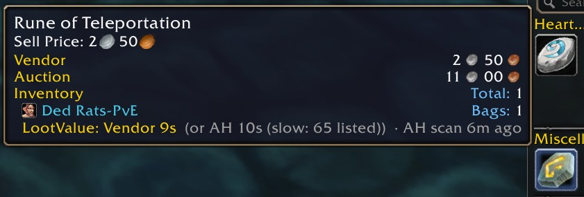

Find anything.
Sell smarter.
Two small addons for WoW Forever.
Download the installer Windows
Double-click it. Run it again to update.
⚠ LootValue needs Auctionator.
Install that first.
Omni
Press Ctrl+Space and search your items, places, people, spells, NPCs and quests.

LootValue
One line on each item tooltip: vendor it, sell it on the AH, or disenchant it.

What Omni finds
- Items in your bags, bank and mail, and in your Auctionator scan. Enter links it; at the AH it searches.
- Places: every zone, city and dungeon. Enter opens the map.
- People: friends, guild, group, recent whispers. Enter whispers, Shift+Enter invites.
- Spells: Enter puts the spell on your cursor.
- NPCs and quests with Questie: Enter pins them on the map.
i: items, p: places, @ people, s: spells, n: NPCs, q: quests. Or type /omni.How LootValue decides
It compares the AH price (after the cut, and the deposit you lose if it doesn't sell) with the vendor price
and disenchanting, and says when the market looks slow. Prices come from your Auctionator scan, so scan now and then.
Bolt of Silk Cloth
Trade Goods
LootValue: AH ~31s (or vendor 2s 40c, disenchant: no price)
Install, step by step
- Install Auctionator (CurseForge or WowUp).
- Download update.cmd and double-click it. It finds your
_forever_folder, or asks once. - Quit WoW fully and start it again (
/reloaddoesn't find new addons). Check they are on in the AddOns list.
Windows warns me about the file
Windows asks before it runs any downloaded script. The installer downloads the addons from this project's
GitHub releases, checks each
file's SHA-256, and changes only the
Omni and LootValue folders in Interface\AddOns.
It also keeps two small files in %LOCALAPPDATA%\wow-addons (your WoW folder and what it installed),
and uses a short-lived wow-addons-staging-… folder in your WoW folder while it works.Install by hand
Download the zips from the latest release. Unzip each into
_forever_\Interface\AddOns\ so you get AddOns\Omni\Omni.toc. The code is on
GitHub.Is it safe?
They only use the game's normal addon interface. They never press keys or cast spells for you.